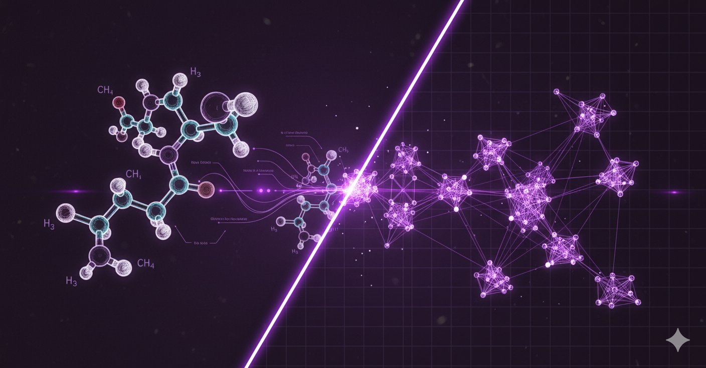

Industries & Case Studies
At Mirai Engineering, we let our results speak for themselves. Our case studies demonstrate technical versatility and unwavering commitment to transforming complex challenges into innovative solutions.
What Mirai has delivered
Real-world AI implementations that drive measurable business results across diverse industries. From engineering to business operations, or medicine to financial markets - we've got you covered.
Optimization Frameworks with Artificial Neural Networks

Optimization challenges involve finding the best combination of parameters to achieve desired outcomes, whether maximizing molecular stability, extending machine lifetime, or optimizing supply chain efficiency. In practice, this means exploring vast parameter spaces: atoms in a molecule, components in a machine, or logistics variables in operations. Instead of testing countless iterations manually, AI rapidly identifies optimal configurations, accelerating development cycles and reducing costs. Below we describe our approach where we use AI to optimize the design of new eco-friendly fuels (e-Fuels).
Molecular Optimization
We were involved in the early days of molecular-modeling with Artificial Networks, nowadays spread as "Graph Neural Networks". By training an AI model with sufficient data, you can create new molecules and predict key properties.
In concrete: we reduced the experimental design of new e-Fuels from several weeks to seconds. Additionally, you can immerse the model into an optimization-framework that can output a tailored-made fuel that maximizes power output by using only carbon-free components in the chemical structure.
How Did We Do It?
We built an AI model that predicts how fast different fuels burn. To do this, we combined two sources of data:
- Real measurements from 124 fuel compounds.
- Computer simulations based on detailed chemical models.
The AI takes into account the fuel's molecular structure, as well as conditions like pressure, temperature, and fuel-to-air ratio. With this information, it can accurately estimate burning speed, within just a few centimeters per second of the true values. Beyond prediction, the model also helps us understand why fuels behave differently. By analyzing how certain molecular groups affect burning, we can compare fuels more systematically and design new ones more efficiently. If you're curious, check out the paper below!

Intelligent Financial Markets Analysis

AI Agents for Financial Markets

Ready to Transform Your Business?
Let's discuss how AI can revolutionize your operations and drive unprecedented growth.
Get Started Today